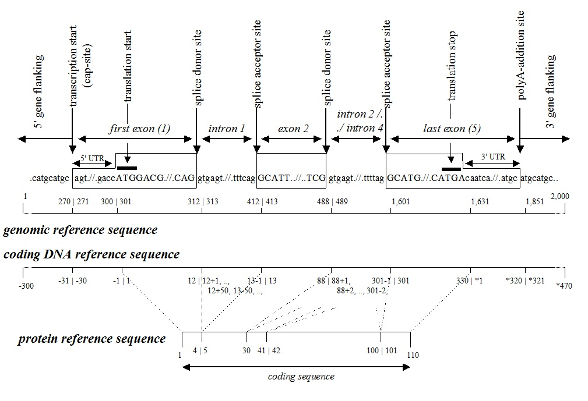

Example and Figure reference sequences |
|
Since references to WWW-sites are not yet acknowledged as citations, please mention den Dunnen JT and Antonarakis SE (2000). Hum.Mutat. 15: 7-12 when referring to these pages.

For a coding DNA reference sequence the basic recommendation is that it should represent the major and largest transcript of the gene. Alternatively spliced exons (5'-first, internal or 3'-terminal) derived from within the gene can be numbered as for intronic sequences. Variants in transcripts initiating or terminating outside this region can be described as upstream / downstream sequences.
Examples
- alternative promoter
- 5' of the major transcript; example DMD promoter brain-specific transcript
- inside gene; example DMD promoter retina-specific transcript (in intron 29)
- introns in 5' untranslated region (UTR)
for details see RefSeq numbering with introns 5' of the ATG
example FKRP coding DNA reference sequence (three 5' UTR introns)- alternatively spliced exon
- alternative 3' terminal exon
- inside gene
- directly 3' of exon; example LMNA coding DNA reference sequence (exon/intron 10)
- completely in intron; example TTN coding DNA reference sequence (in intron 47)
- after gene (in gene downstream sequence); example
| Top of page | MutNomen
homepage | Check-list |
| Recommendations: DNA, RNA, protein, uncertain | Symbols, codons, etc. |
| Discussions | FAQ's | History |
| Example descriptions: QuickRef / symbols,
DNA, RNA, protein |
Copyright © HGVS 2007 All Rights Reserved |